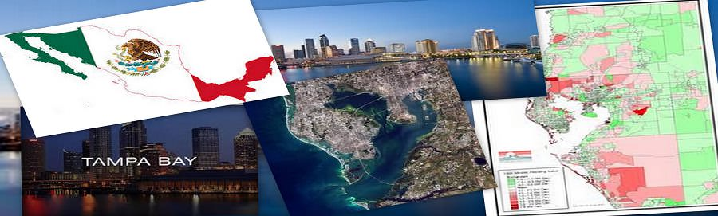
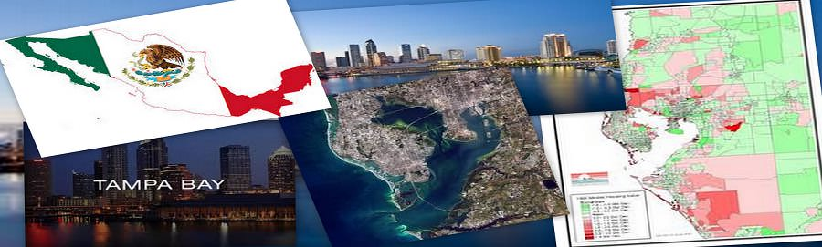
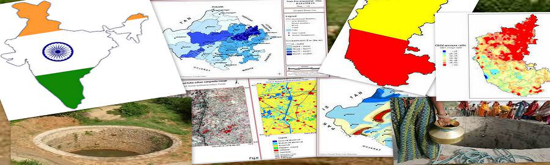
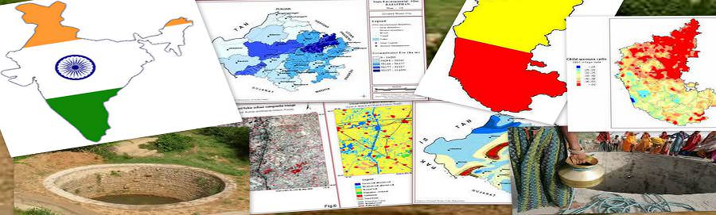

Пример
Узнав от прошлого, Улучшение будущее ...


 

 

ПРИМЕР - ИТАЛИЯ
Итальянской провинции Снасти гидрологические опасности с ГИС и дистанционного зондирования:
Автономная провинция Больцано находится в северной части Италии и разделяет границу с Австрией. С поверхности 7400 квадратных километров, Больцано, в основном, гористая, ее высота в пределах от 200 до более чем 3800 метров над уровнем моря (ASL). Департамент Больцано 30 агентство провинции, отвечающий за разрешение конфликтов между природной среды и потребностей человека. В частности, Департамент 30 управляет строительства и обслуживания инженерных мер по смягчению последствий гидрологических и геологических опасностей, таких как дамб &Amp; стоки.
Для этого, в последние годы, провинция разработан и реализован ряд баз геоданных ГИС, которые включают общие наборы данных, таких как цифровые модели рельефа, растительного покрова, карты землепользования и ортофотоснимку. Также были включены более конкретные наборы данных, такие как инвентаризация исторических наводнений и паводков мусора и инвентаризации гидротехнических сооружений уже на месте. конкретные рамки проекта под названием Информационная система для гидрогеологических опасностей и рисков (ММСП), авторами Европейской комиссии среди прочего, был разработан, чтобы сделать необходимую информацию в области управления рисками, доступном для проектировщиков Больцано в простой и стандартизированным способом.
В рамках проекта ММСП, бассейн Информация о системе управления 30 (бассейн 30) приложение было разработано, чтобы упростить извлечение на уровне водоразделов, наиболее соответствующей информации с целью планирования новых гидротехнических сооружений.
ПРИМЕР - АФРИКА
База данных Африканская водными ресурсами использует ГИС & дистанционного зондирования:
База данных Африканская водными ресурсами (ПРЕМИЯ) включает в себя обширный архив инструменты и ГИС, предназначенные для облегчения ответственного внутренних водных управление ресурсами с общей цели обеспечения продовольственной безопасности.
Информация, которая хранится в архиве данных включает в себя поверхностных водных объектов, водосборных бассейнов, водные виды, реки, политические границы, плотность населения, почвы, спутниковые снимки и физико-географических и климатологических данных. AWRD был разработан для использования администраторами, технических специалистов, пространственных аналитиков, преподавателей и студентов.
AWRD был разработан на основе рекомендаций Комитета по внутреннему рыболовству и аквакультуре в Африке и одновременно расширение и обновление более раннего проекта во главе с управления водных ресурсов для Программы развития местного сообщества, называется базой данных Сообщества развития Юга Африки водных ресурсов.
Для отображения и анализа архивные данные, ПРЕМИЯ содержит пользовательские приложения и инструменты, запрограммированные для работы под ArcView. База данных позволяет интегрировать различные виды информации в единую программу, которая, из-за его визуального характера, легко понять и интерпретировать. Каталог
Издание базы данных представлен в двух частях: концепции и применениях, и техническое руководство и книги. Основной интерфейс ПРЕМИЯ, наборы инструментов, и данные неотъемлемой функцией AWRD распределены в двух DVD-дисков, сопровождающих техническое руководство и книги.
ПРИМЕР РОССИИ-
Благодаря передовым пространственной визуализации и анализа <сильный> возможностей ГИС, исследователи Санкт-Петербургского государственного электротехнического университета (ЭТУ) в России способны карта и изучать природные водоемы; их загрязнения; Источник, местоположение и уровни загрязняющих веществ; а содержание загрязняющих веществ. Их анализ природных водоемов и промышленных предприятий дает возможность прогнозировать уровень техногенного воздействия и изучения различных сценариев для выработки рекомендаций по рациональному использованию природных водных ресурсов.
A Water тела расследований
Система мониторинга на основе ГИС была создана состав Северо-Западного России Невы, расположенный в Кировском районе Ленинградской области. Река Нева является неотъемлемой частью водной системы региона, которая также включает Онежское озеро, реке Свирь, Ладожское озеро, Невская губа, и восточную часть Финского залива в. Вся эта система водной влияетрасположенных на ее берегах.
Система мониторинга на основе ГИС была создана состав Северо-Западного России Невы, расположенный в Кировском районе Ленинградской области. Река Нева является неотъемлемой частью водной системы региона, которая также включает Онежское озеро, реке Свирь, Ладожское озеро, Невская губа, и восточную часть Финского залива в. Вся эта система водной влияет промышленно развитой области, которая служит в качестве основного источника загрязнения. Река Нева получает сточных вод, сбрасываемых из муниципальных очистных сооружений сточных вод, необработанной и стоков ближайшие из промышленных и сельскохозяйственных предприятий, расположенных на ее берегах.
ПРИМЕР-ФЛОРИДА
Оценка уязвимости Флорида водоносного горизонта Использование ГИС:
Модели уязвимости водоносных Недавно developedGIS основе предоставляют ценные инструменты защиты грунтовых вод с широкими приложениями по всей Флориде. Предназначен для повышения усилия защиты для хрупких ресурсов питьевой воды Флориды, модели обеспечивают новые возможности для планирования общин, общественных работ персонала, специалистов экологических, ливневых вод и сточных вод, инженеров и органов местного самоуправления. Эти модели широко используются во многих областях, в том числе планирование землепользования, выявление областей, пополнения планирования сточных вод, устьевого защиты, идентификации экологически чувствительных зонах, управление ливневой и весенние protection.Aquifers являются одними из самых важных источников питьевой воды В Соединенных Штатах. Во Флориде, по оценкам, 90 процентов питьевой воды происходит из водоносных горизонтов, поэтому выявление областей, где системы водоносных горизонтов являются более уязвимыми к загрязнению является важным компонентом комплексного управления подземными водами и защиты программы.
Проект, который возник был назван Флорида водоносного горизонта оценки уязвимости (ФАВА) .Отель Основная цель проекта FAVA было обеспечить научно оправданное управления водными ресурсами и инструмент защиты, которая облегчает планирование землепользования с целью минимизации воздействия на качество подземных вод. Дизайнеры проекта стремились создавать значимые и полезные инструменты, чтобы помочь обеспечить сбалансированную защиту и будущее использование ресурсов подземных вод по характеризующий природный уязвимость систем водоносных горизонтов.
ПРИМЕР-Tampa Bay
Тампа-Бэй воды Развертывание ГИС к модели Питьевая распределения воды:
Тампа-Бэй вода, региональная власть вода юрисдикция которого включает в себя три густонаселенных округов в штате Флорида (Хиллсборо, Паско и Pinellas,), несет ответственность за обеспечение питьевой водой региональных энергетических государственных членом района Тампа-Бэй. Эти местные органы власти включают Хиллсборо округа, города Нью-Порт-Ричи, округе Паско, Пинеллас Каунти, Город Санкт-Петербург, и город Тампа.
Тампа-Бэй воды зависит от ГИС для различных аспектов ее деятельности . В частности, ГИС используется для управления региональной ротации источника водоснабжения, что позволяет свести к минимуму воздействие на ее поверхность подземных вод и водоснабжения, а также окружающие водно-болотных угодий и водоносных горизонтов системы региона.
В июне 2007 года,Тампа-Бэй воды была поставлена задача по ее государства-члены разработать высокого разрешения распределение воды (расход) приложение для ан. Успешная реализация GOVNET стало возможным потому, Тампа-Бэй воды старательно собраны счетов временных рядов данных от своих правительств стран-членов на ежемесячной основе с 1998 года по настоящее время на уровне аккаунта.
Тампа-Бэй воды изучает будущие приложения в рамках GOVNET, в том числе включения данных программы сохранения, чтобы менеджеры спроса, чтобы увидеть, как реагировать потребление воды является целевых мер по сохранению в течение долгого времени. Используя этот целевой подход к сохранению поможет облегчить спроса на воду для Tampa Bay воде и способствовать дальнейшему своей цели надежного и устойчивого водоснабжения для будущих поколений.
ДЕЛО г. изучение ИНДИЯ
TUTICORINOttapidaram наследственное имение, лежащий между широтах N 9 ° 3'14 "и 8 ° 48'33" E долготы 77 ° 47'04 "и 78 ° 12'53 " Тампа-Бэй воды старательно собраны счетов временных рядов данных от своих правительств стран-членов на ежемесячной основе с 1998 года по настоящее время на уровне аккаунта.
Тампа-Бэй воды изучает будущие приложения в рамках GOVNET, в том числе включения данных программы сохранения, чтобы менеджеры спроса, чтобы увидеть, как реагировать потребление воды является целевых мер по сохранению в течение долгого времени. Используя этот целевой подход к сохранению поможет облегчить спроса на воду для Tampa Bay воде и способствовать дальнейшему сво
были классифицированы с использованием контролируемого технику классификации. Землепользование / Растительный покров карта и Геоморфология карту пространственное распределение карта подготовлена через ERDAS обработки изображений программного обеспечения. Землепользования классификации, принятой в настоящем исследовании основан на Национальный Дистанционное зондирование классификация агентство. Карта геологии собирают из Геологическая служба Индии, проследить, отсканированы и в ГИС.
Грунтовые воды подпитки в Ottapidaram Taluk является результатом взаимодействия между геоморфологии и уровень воды в процессе постоянного регулирования между обжимным подходит для пополнения площадь зоны занимает площадь около 638.42 км2 из потому что из этих областей, естественно, попадают под активным сельскохозяйственных земель. Это тревожная ситуация призывает к стоимости и времени эффективным методом для правильной оценки ресурсов подземных вод и планирование управления. Таким образом, ГИС была доказана, чтобы быть важным в приобретении знаний о грунтовых водах в регионе.
ДЕЛО г. изучение ИНДИЯ
BILWARABhilwara находится между 25 ° .00 'до 27 ° .50' северной широты и 74 ° .03 'до 75 ° .25' восточной долготы. Проект зондирования запасов подземных вод ощущалось в этом регионе . В этом проекте были использованы оба спутниковых данных, а также обширные полевые данные для подготовки различных тематических карт. Насколько обеспокоен спутниковых данных IRS-1D LISS III образ был использован для интерпретации и анализа.
Это исследование было проведено для некоторых частей из Bhīlwāra района, Раджастхан, чтобы изучить Грунтовые воды перспективы области. Все Гидрогеологические темы была создана в интерпретации спутниковых данных и Впоследствии проверяется полевой проверки. Кроме из этого, гидрологического и базовой темы Также создан в ГИС. Все темы был интегрирован и проанализированы, чтобы подготовить карты перспективы подземных. Исходя из на гидрогеологии и дренажной схемы, подходящее место дляпополнения структур предложил на карте.
GULBARGAРайон исследований Gulbarga это быстро развивающийся город в северной штате Карнатака Индии. Город расположен на Широта 17 ° 17 '17 ° к 22' и долготе 76 ° 47 'до 76 ° 52'.Область исследования было сочтено необходимым, как хронически подверженных засухе районе штата Карнатака, из-за меньшего и переменного возникновения годового количества осадков, которые ставит бремя на эксплуатации и управлении суб поверхности воды.